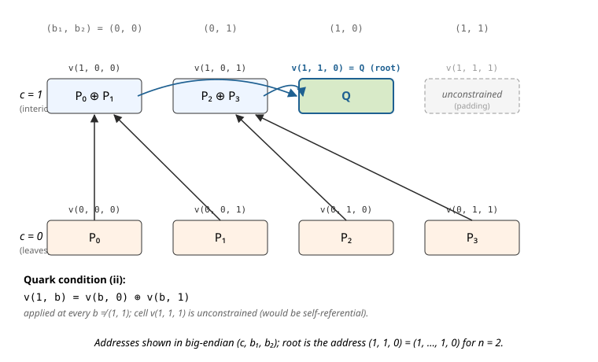

3. EC-Sum Quark PIOP
This note documents the EC-sum Quark PIOP implemented in Ceno, used to accumulate $N$ elliptic-curve points on a short-Weierstrass curve $y^2 = x^3 + ax + b$ into a single sum
$$ Q = P_0 + P_1 + \cdots + P_{N-1}, \qquad P_i \in E(\mathbb{F}_{q^7}), \tag{1} $$
inside a single GKR layer. Each point’s affine coordinates live in the septic extension $\mathbb{F}_{q^7}$, so every extension-field MLE below corresponds to $7$ base-field MLEs and every algebraic relation expands into $7$ base-field scalar relations (one per $\mathbb{F}_q$-basis component). For brevity we work at the coordinate / extension-field level throughout.
Why this PIOP exists
The textbook way to prove a sum of $N$ values is a binary accumulation tree: pair leaves into $N/2$ partial sums, pair those into $N/4$, and so on, with $\log_2 N$ layers. Implemented as a tower-style GKR circuit, the intermediate layer values are derived — not committed — but the protocol pays for one sumcheck instance per layer to reduce a claim at layer $k$ to a claim at layer $k+1$:
Toy: $N = 4$ ($\log_2 N = 2$ layers) ⇒ $2$ sumcheck instances.
Real: $N = 2^{20}$ ⇒ $20$ sumcheck instances.
The Quark method (Setty–Lee [Quark]) collapses the tower into a single MLE identity (condition (ii) below) and discharges the whole tree with one sumcheck over a domain of size $2N$, regardless of depth.
The Quark encoding
Pack the entire accumulation tree — leaves and every intermediate partial sum — into one EC-point-valued multilinear extension $v: B_{n+1} \to E(\mathbb{F}_{q^7})$ by imposing three structural conditions:
$$ \begin{aligned} \text{(i)} \quad & v(0, \mathbf{b}) = P_{\mathbf{b}}, && \forall \quad \mathbf{b} \in B_n, \\ \text{(ii)} \quad & v(1, \mathbf{b}) = v(\mathbf{b}, 0) \oplus v(\mathbf{b}, 1), && \forall \quad \mathbf{b} \in B_n \setminus \{(1, \ldots, 1)\}, \\ \text{(iii)} \quad & v(1, 1, \ldots, 1) \text{ is unconstrained.} && \end{aligned} \tag{2} $$
Here $\oplus$ is elliptic-curve addition and $P_{\mathbf{b}}$ is the input point at the leaf address $\mathbf{b}$. Condition (ii) is self-referential: its right-hand side looks up $v$ at two addresses $(\mathbf{b}, 0)$ and $(\mathbf{b}, 1)$ that are themselves either leaves (if the leading bit of $\mathbf{b}$ is $0$) or interior nodes (if it is $1$). The recursion is well-founded: unrolling (ii) downward from the root address $(1, 1, \ldots, 1, 0)$ decomposes $Q$ into the full binary accumulation tree over the leaves prescribed by (i). The cell $v(1, 1, \ldots, 1)$ is left free because forcing condition (ii) there would collapse the root to the identity.
The accumulated sum $Q$ sits at the root address
$$ Q = v(1, 1, \ldots, 1, 0). \tag{3} $$
Example ($N = 4$). With $n = 2$, $v$ has $3$ Boolean variables $(c, b_1, b_2)$ and $2^{n+1} = 8$ cells. Four cells at $c = 0$ hold the inputs; four cells at $c = 1$ hold interior partial sums, with one cell unconstrained:

Outline
The note is organised in four sections:
- Quark MLE encoding — how condition (ii) fits an entire binary accumulation tree into one polynomial.
- Affine EC addition as polynomial constraints — $\oplus$ involves a division, so we commit a slope hint and replace the rational formula with three polynomial zerocheck constraints.
- The PIOP (power-of-two $N$) — a single selector-gated zerocheck over $B_n$ that enforces all three Quark conditions plus the root-output binding, and reduces to $7$ opening claims on the three committed MLEs.
- General $N$ — extend the selector family to handle the case where $N$ is not a power of two, by splitting interior nodes into add and bypass classes.
1. Quark MLE encoding
Why packing the tree into one MLE is non-trivial
A naïve binary-tree GKR proof keeps each layer as a separate (implicit) polynomial and links adjacent layers via one sumcheck instance each — so the number of sumcheck PIOP invocations scales as $\log_2 N$.
Quark’s observation is that a single polynomial $v$ over $B_{n+1}$ has exactly enough addresses — $2^{n+1} = 2N$ — to store $N$ leaves plus $N - 1$ interior nodes, with one cell to spare. The question is whether the inter-layer wiring can be recast as a constraint internal to $v$, so that one sumcheck over $v$ discharges all $\log_2 N$ layer reductions at once.
Why the self-reference in (ii) is well-defined
Condition (ii) reads off two cells of $v$ and sets a third cell of $v$. On the Boolean hypercube this is not circular: at $\mathbf{b}$ with leading bit $0$, both right-hand-side cells are leaves (prescribed by (i)); at $\mathbf{b}$ with leading bit $1$, both right-hand-side cells are interior nodes whose addresses are strictly smaller (in the natural big-endian ordering) than $(1, \mathbf{b})$. A topological sort exists, so $v$ is determined layer-by-layer from leaves upward — even though the constraint itself is stated uniformly over all of $B_n \setminus \{(1, \ldots, 1)\}$.
What Quark buys
After this repackaging, the entire accumulation is captured by two coordinate MLEs $x, y: B_{n+1} \to \mathbb{F}_{q^7}$ — one committed polynomial per coordinate, regardless of $N$. Section 3 adds a third MLE $s$ for the slope hints introduced below; in total three committed witness MLEs per EC-sum instance.
2. Affine EC addition as polynomial constraints
The division obstruction
On a short-Weierstrass curve $y^2 = x^3 + ax + b$, two distinct affine points $P_0 = (x_0, y_0)$ and $P_1 = (x_1, y_1)$ sum to a parent point $P_{\mathrm{p}} = (x_{\mathrm{p}}, y_{\mathrm{p}})$ given by
$$ \lambda = \frac{y_0 - y_1}{x_0 - x_1}, \qquad x_{\mathrm{p}} = \lambda^2 - x_0 - x_1, \qquad y_{\mathrm{p}} = \lambda \cdot (x_0 - x_{\mathrm{p}}) - y_0. \tag{4} $$
The division obstructs a direct polynomial encoding. A PIOP constraint $C(\cdot) = 0$ must be a polynomial in its witness arguments, so $\lambda$ cannot be expressed in-line.
The slope-hint trick
Commit an extra witness $s$ that claims to be the slope $\lambda$ at every interior-node addition. Once $s$ is a committed polynomial, the rational relations in (4) rewrite as three low-degree zerocheck constraints per node:
$$ \begin{aligned} 0 &= s \cdot (x_0 - x_1) - (y_0 - y_1), \\ 0 &= s^2 - x_0 - x_1 - x_{\mathrm{p}}, \\ 0 &= s \cdot (x_0 - x_{\mathrm{p}}) - (y_0 + y_{\mathrm{p}}). \end{aligned} \tag{5} $$
The first line pins $s$ to the slope; the second and third lines assert that $(x_{\mathrm{p}}, y_{\mathrm{p}})$ is the chord-and-tangent sum. Each of these three relations is degree $\leq 2$ in the witnesses and — because the coordinates live in $\mathbb{F}_{q^7}$ — expands into $7$ base-field relations, for a total of $3 \times 7 = 21$ scalar zerocheck constraints per interior node.
3. The PIOP (power-of-two $N$)
In this section we assume $N = 2^n$, so every interior node sums two active children. Section 4 lifts the assumption.
Witnesses and selectors
Three committed MLEs over $B_{n+1}$ per EC-sum instance:
- $x, y$ — the two coordinates of $v$, packing leaves and all partial sums via the Quark conditions (2).
- $s$ — slope hints, one value per interior node (cells with $c = 1$).
Index interior nodes by $\mathbf{b} \in B_n$ (so the interior cell corresponding to $\mathbf{b}$ sits at address $(1, \mathbf{b})$ in $B_{n+1}$). Two precomputed selectors pick out the subsets of $B_n$ on which the two constraint families live:
- $\mathrm{sel}_{\mathrm{add}}(\mathbf{b})$ — one for $\mathbf{b} \in B_n \setminus \{(1, \ldots, 1)\}$, zero on the unconstrained address. Triggers the EC-add constraints (5) at every interior node.
- $\mathrm{sel}_{\mathrm{exp}}(\mathbf{b})$ — indicator of the root address $\mathbf{b} = (1, \ldots, 1, 0)$. Pins the root to the claimed public sum $Q$.
Half-evaluations
Define seven half-evaluations — multilinear polynomials on $B_n$ obtained by fixing one Boolean coordinate of $x$, $y$, or $s$:
$$ \begin{aligned} x_0(\mathbf{b}) &:= x(\mathbf{b}, 0), & x_1(\mathbf{b}) &:= x(\mathbf{b}, 1), & x_{\mathrm{p}}(\mathbf{b}) &:= x(1, \mathbf{b}), \\ y_0(\mathbf{b}) &:= y(\mathbf{b}, 0), & y_1(\mathbf{b}) &:= y(\mathbf{b}, 1), & y_{\mathrm{p}}(\mathbf{b}) &:= y(1, \mathbf{b}), \\ & & s_{\mathrm{p}}(\mathbf{b}) &:= s(1, \mathbf{b}). & & \end{aligned} $$
At interior address $\mathbf{b}$ these are exactly the data an EC-add reads: left and right children $(x_0, y_0), (x_1, y_1)$, parent $(x_{\mathrm{p}}, y_{\mathrm{p}})$, and parent slope $s_{\mathrm{p}}$. Collect them into $\mathbf{w}(\mathbf{b}) = (x_0, x_1, x_{\mathrm{p}}, y_0, y_1, y_{\mathrm{p}}, s_{\mathrm{p}})(\mathbf{b})$.
The zerocheck
Let $C_{\mathrm{add}}(\mathbf{w})$ denote a random-linear combination of the three constraints in (5), and let $C_{\mathrm{exp}}(\mathbf{w}; Q)$ denote the constraint $(x_{\mathrm{p}}, y_{\mathrm{p}}) = Q$. The verifier samples a zerocheck challenge $\mathbf{z} \in \mathbb{F}^n$ and runs sumcheck on
$$ 0 = \sum_{\mathbf{b} \in B_n} \mathrm{eq}(\mathbf{z}, \mathbf{b}) \cdot \Bigl( \mathrm{sel}_{\mathrm{add}}(\mathbf{b}) \cdot C_{\mathrm{add}}(\mathbf{w}(\mathbf{b})) + \mathrm{sel}_{\mathrm{exp}}(\mathbf{b}) \cdot C_{\mathrm{exp}}(\mathbf{w}(\mathbf{b}); Q) \Bigr). \tag{6} $$
Reduction to opening claims
The sumcheck draws fresh random challenges $\mathbf{r} \in \mathbb{F}^n$ round by round and reduces (6) to claimed evaluations of the seven half-evaluations at $\mathbf{r}$. Since each half-evaluation is a partial evaluation of $x$, $y$, or $s$ at a hypercube-fixed coordinate, the PIOP opens each committed witness at the following points of $B_{n+1}$:
$$ \boxed{ \begin{array}{ll} x, y & \text{at } (\mathbf{r}, 0), (\mathbf{r}, 1), (1, \mathbf{r}) \\ s & \text{at } (1, \mathbf{r}) \end{array} } \tag{7} $$
— three points each for $x$ and $y$ (the two children $(\mathbf{r}, 0), (\mathbf{r}, 1)$ and the parent $(1, \mathbf{r})$ of a generic addition), one point for $s$ (the parent, since slope hints only live on interior cells).
4. General $N$
Padding $N$ up to $2^n \geq N$ introduces “padded” leaf slots with no real input point. The Quark tree then has interior nodes whose two children are not both active: the Section-3 add constraint cannot fire there. We fix this by refining the interior-node selectors — no extra committed witnesses, no change to the three committed MLEs $x, y, s$.
The active prefix
Mark the leaf $v(0, \mathbf{b})$ as active iff $\mathbf{b} < N$ under the natural big-endian ordering of $B_n$, otherwise padded. Activeness propagates bottom-up: an interior node is active iff at least its left child is active. Equivalently, at each depth $k \geq 0$ (depth $0$ = leaves), the active cells form a prefix of length $\lceil N / 2^k \rceil$ in the big-endian ordering.
Add versus bypass
Split interior addresses $(1, \mathbf{b})$ with $\mathbf{b} \in B_n \setminus \{(1, \ldots, 1)\}$ into two classes by the status of the right child $v(\mathbf{b}, 1)$:
- Add node — right child is active (so both children are active, by the propagation rule). Apply the EC-add constraint family (5) as in Section 3.
- Bypass node — right child is padded. The node’s value equals its left child, whether the left child is itself an active partial sum or a padded slot: $$ 0 = x_{\mathrm{p}}(\mathbf{b}) - x_0(\mathbf{b}), \qquad 0 = y_{\mathrm{p}}(\mathbf{b}) - y_0(\mathbf{b}). \tag{8} $$ Two constraints per coordinate component ⇒ $2 \times 7 = 14$ scalar constraints per bypass node.
Subsuming “both children padded” cells into the bypass class is benign on both sides:
- Completeness — an honest prover fills these padded addresses with any values consistent with bypass (e.g. all zeros), so (8) holds trivially there.
- Soundness — padded values never flow into $Q$. The output selector $\mathrm{sel}_{\mathrm{exp}}$ fires only at the root, which is active, and unrolling its value downward through add / bypass constraints stays inside the active subtree. Whatever the prover commits at padded addresses cannot corrupt the accumulated sum.
Only the active bypass nodes (left child active, right padded) carry real arithmetic content.
Introduce a second selector $\mathrm{sel}_{\mathrm{byp}}$ indicating bypass nodes. Together with $\mathrm{sel}_{\mathrm{add}}$ and the one unconstrained address $\mathbf{b} = (1, \ldots, 1)$, they partition $B_n$:
$$ \mathrm{sel}_{\mathrm{add}}(\mathbf{b}) + \mathrm{sel}_{\mathrm{byp}}(\mathbf{b}) + \mathbf{1}_{\{\mathbf{b} = (1, \ldots, 1)\}} = 1, \qquad \forall \mathbf{b} \in B_n. \tag{9} $$
Both selectors depend only on $N$ and $n$; the verifier derives them with no extra commitments. In particular $\mathrm{sel}_{\mathrm{byp}}$ is recoverable from $\mathrm{sel}_{\mathrm{add}}$ via (9), so the prover only sends $\mathrm{sel}_{\mathrm{add}}$’s claimed evaluation.
Extended zerocheck
The PIOP adds the bypass term to (6):
$$ 0 = \sum_{\mathbf{b} \in B_n} \mathrm{eq}(\mathbf{z}, \mathbf{b}) \cdot \Bigl( \mathrm{sel}_{\mathrm{add}} \cdot C_{\mathrm{add}} + \mathrm{sel}_{\mathrm{byp}} \cdot C_{\mathrm{byp}} + \mathrm{sel}_{\mathrm{exp}} \cdot C_{\mathrm{exp}} \Bigr)(\mathbf{b}), \tag{10} $$
where $C_{\mathrm{byp}}$ is a random-linear combination of the two bypass relations (8). The opening points (7) are unchanged — $x, y$ at $(\mathbf{r}, 0), (\mathbf{r}, 1), (1, \mathbf{r})$ and $s$ at $(1, \mathbf{r})$ — since the bypass constraint reads the same half-evaluations as the add constraint (it just ignores the right child).
Example ($N = 3$, $n = 2$). Padding $N = 3$ up to $2^n = 4$ leaves one padded leaf slot $v(0, 1, 1)$. The four interior addresses classify as:
- $v(1, 0, 0)$ — children $v(0, 0, 0) = P_0$, $v(0, 0, 1) = P_1$, both active ⇒ add, yielding $P_0 + P_1$.
- $v(1, 0, 1)$ — children $v(0, 1, 0) = P_2$, $v(0, 1, 1) =$ padded ⇒ bypass, yielding $P_2$.
- $v(1, 1, 0)$ — children $v(1, 0, 0) = P_0 + P_1$, $v(1, 0, 1) = P_2$, both active ⇒ add, yielding $Q = P_0 + P_1 + P_2$. This is the root; $\mathrm{sel}_{\mathrm{exp}}$ fires here too.
- $v(1, 1, 1)$ — unconstrained (Quark condition (iii)).
TODO
- Duplicate points. The slope formula (4) and the pinned-slope relation in (5) both assume $P_0 \ne P_1$ (so $x_0 \ne x_1$). When two children of an add node coincide — e.g. the same EC point appears twice among the inputs, or a partial sum collides with a sibling — the chord degenerates to the tangent and the PIOP must switch to the point-doubling formulas. How to fold this case into the same selector-gated zerocheck is left to a future revision.
References
- Setty, Lee. Quarks: Quadruple-efficient transparent zkSNARKs. Cryptology ePrint 2020/1275. 2020. The grand-product variant of the tree-packing identity in (2); the EC-sum version adapts the same encoding to group addition. Available at: https://eprint.iacr.org/2020/1275.pdf